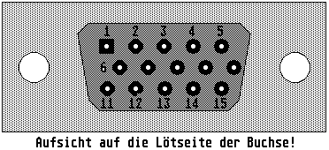

Previous
Next
TOC
Die Pinbelegung des Paddle Port B (Erweiterter Joystickanschlufl)
1 Hoch Joystick 1
11 Hoch Joystick 3
2 Runter Joystick 1
12 Runter Joystick 3
3 Links Joystick 1
13 Links Joystick 3
4 Rechts Joystick 1
14 Rechts Joystick 3
5 Paddle Joystick 1 Y-Achse 15 Paddle Joystick 1 X-Achse
6 Feuer Joystick 1
7 +5V DC
8 Not Connected
9 Ground
10 Feuer Joystick 3

Kapitel Die Pinbelegung des Paddle Port B, Seite 1